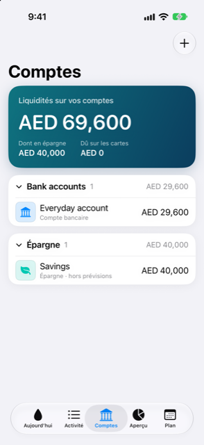

Guide › Comptes, cartes et personnes
La page Comptes
Vos banques, épargnes, portefeuilles, cartes, prêts et personnes dans une seule liste.
Comptes liste tout ce qui détient ou doit de l’argent, regroupé en sections que vous pouvez replier. C’est la page de votre situation complète : ce que vous pouvez dépenser, ce que les cartes doivent, et où en est chaque compte.

Quand l’utiliser
- Pour voir vos liquidités d’un coup d’œil, et combien en repose en épargne par rapport à ce que les cartes doivent.
- Pour ouvrir un compte et lire les chiffres qui comptent pour son type.
- Pour ajouter un nouveau compte ou une personne, ou importer un relevé ou des captures d’écran.
- Pour renommer un compte, changer son logo, l’inclure ou l’exclure des prévisions, ou l’archiver.
Pas à pas
- Ouvrez l’onglet Comptes. La carte du haut, Liquidités sur vos comptes, additionne les comptes bancaires, l’épargne et les portefeuilles dans votre devise principale ; les dettes de cartes ne sont pas déduites de ce montant. Sous le chiffre figurent Dû sur les cartes et, quand votre épargne n’est pas nulle, Dont en épargne.
- Faites défiler jusqu’aux sections. Chacune — Comptes bancaires, Épargne, Espèces et portefeuilles, Cartes de crédit, Prêts, Placements, Actifs, Personnes — indique combien de comptes elle contient et, quand un total unique peut être calculé dans une seule devise, ce total. Les sections que vous n’utilisez pas n’apparaissent pas.
- Touchez l’en-tête d’une section pour la replier ou l’ouvrir.
- Touchez une ligne pour l’ouvrir. Les banques, l’épargne, les portefeuilles, les cartes et les prêts s’ouvrent sous forme de carte. Les placements ouvrent la page du titre détenu, les actifs ouvrent l’achat en cours de saisie, les personnes ouvrent la personne.
- Touchez la grande carte pour la retourner. Le recto montre le solde (ou Vous devez pour les cartes et les prêts) et les chiffres de son type. Le verso en montre davantage, plus ses derniers mouvements.
- Au verso de la carte, touchez Dépenses pour voir où est passé son argent, Transactions pour tout afficher avec les soldes successifs, ou Détails pour modifier le compte.
- Pour ajouter quelque chose, touchez le bouton plus et choisissez Ajouter un compte, Ajouter une personne, Importer des relevés ou Mettre à jour depuis des captures d’écran.
Bon à savoir
- Le verso de chaque carte porte les chiffres de son type : pour une carte, ses dates de relevé et d’échéance et la prochaine facture ; pour un prêt, l’échéance, sa fréquence, le nombre restant et qui la paie ; pour une banque, son point le plus bas dans les prévisions et ses mouvements récents.
- Dans Détails, vous pouvez renommer le compte, choisir son logo, l’inclure ou l’exclure des prévisions, et archiver le compte après une confirmation. Pour tout ce qui n’est ni une carte ni un prêt, vous pouvez aussi définir un solde minimum à conserver. Pour une carte, vous définissez son cycle de facturation. Un compte archivé conserve son historique mais disparaît des formulaires et des prévisions.
- Le total d’une section ne s’affiche que lorsqu’une seule devise le couvre — pour les comptes d’argent, quand tous les comptes de la section utilisent la même devise ; pour les placements, quand leur valeur peut être calculée. Un avertissement sur la carte du haut, N comptes laissés de côté : aucun taux de change, vous signale qu’un compte dans une autre devise n’a pas pu être converti.
- Pour un compte dans une autre devise, le formulaire du compte vous demande un taux de change une seule fois, quand aucun taux n’est encore connu. Le jour où vous saisissez un taux, le vôtre l’emporte ; un taux plus récent obtenu automatiquement le remplace à l’actualisation suivante.
En rapport
Quelque chose n’est pas clair ou manque ? Écrivez à support@raveniq.ai en indiquant la page.